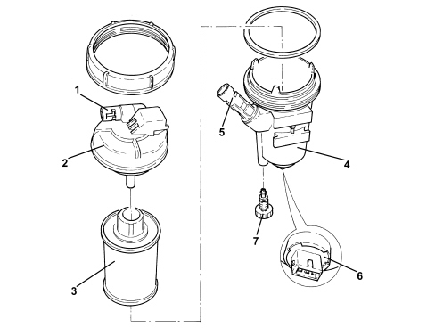
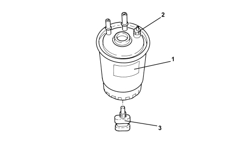

1044B FUEL FILTERS
- Path
- Descriptions > 10 ENGINE > 1044 FUEL CIRCUIT PUMP/S AND DEVICES > 1044B FUEL FILTERS
- Kind
- system description
- Applies to
- engines: 1.9 JTD 8v, 1.9 JTD 16v, 2.4 JTD 20v; all production periods
- Interactive page
- https://sloeber94.github.io/elrnDB-fCrm/en/#/194002391
Applies to: engines: 1.9 JTD 16v; all production periods
DESCRIPTION OF COMPONENTS
Fuel filter
The fuel filter is fitted in the engine compartment near the flame partition.
The filter consists of a plastic casing that contains a cartridge made from a synthetic material which features excellent efficiency, durability and high performance in terms of water separation.

1. Fuel intake
2. Prehater and fuel temperature sensor
3. Filter cartridge
4. Fuel filter mounting
5. Fuel outlet
6. Water presence sensor
7. Bleed valve
Applies to: engines: 1.9 JTD 8v; all production periods
DESCRIPTION OF COMPONENTS
Fuel filter
The fuel filter is fitted in the engine compartment near the flame partition.
The filter consists of a plastic casing that contains a cartridge made from a synthetic material which features excellent efficiency, durability and high performance in terms of water separation.

1. Fuel intake
2. Prehater and fuel temperature sensor
3. Filter cartridge
4. Fuel filter mounting
5. Fuel outlet
6. Water presence sensor
7. Bleed valve
Applies to: engines: 2.4 JTD 20v; all production periods
DESCRIPTION OF COMPONENTS
Fuel filter
The fuel filter (1) is fitted in the engine compartment to the flame partition using the special bracket.
The fuel filter has a bleed valve (2) and a water presence sensor (3).
